Iwade, Wakayama: things to do, food and stays
Iwade · Wakayama
Iwade
Highlighted on the Wakayama map.
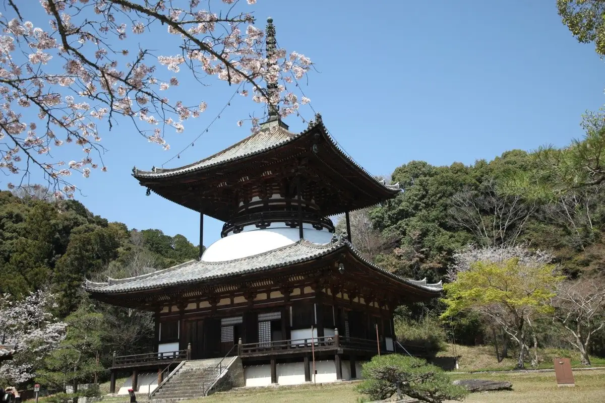
Stay
ホテルいとう
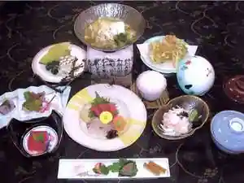
Hotel Ito
Hotel in Miya, Iwade; 15-minute drive from Wakayama IC.
紀州藩 根来路 備前家
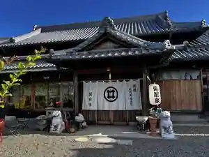
Kishu Han Negoro Michi Bizen Ie
Inn in Bizen, Iwade with one group per day.
Dining
ヴィラ・アイーダ
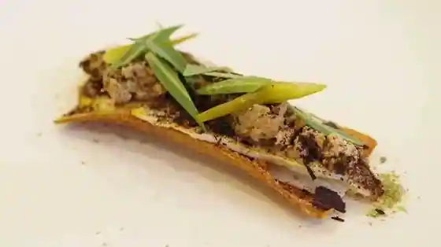
Villa Aida
豚骨中華そば がんたれ
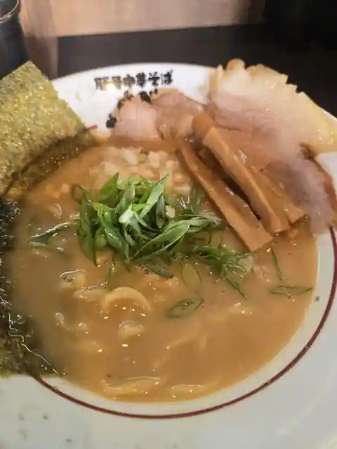
Tonkotsu Chuka Soba Gantare
丸田屋 岩出本店
Maruta Ya Iwade Hon
中華そば まる乃
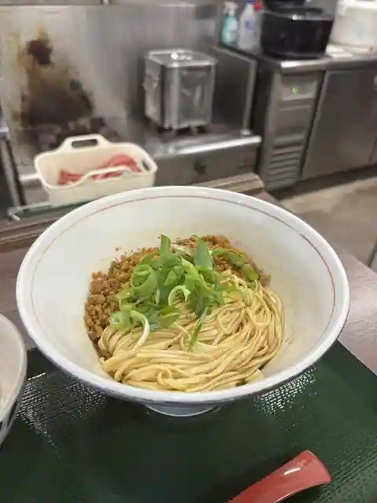
Chuka Soba Maru No
麺や 壱
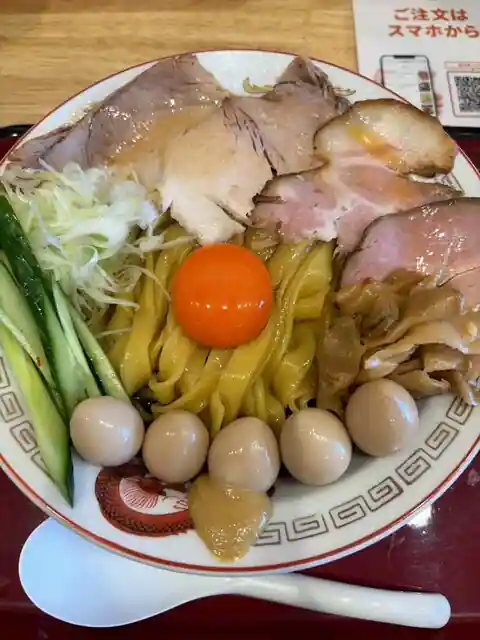
Men Ya Ichi
SHIN8
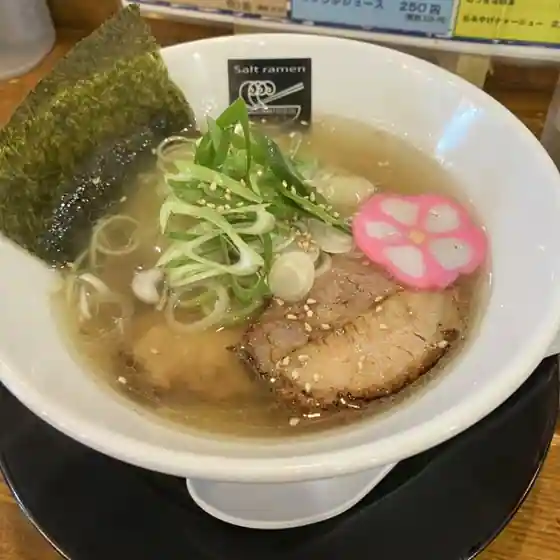
SHIN8
藤左エ門
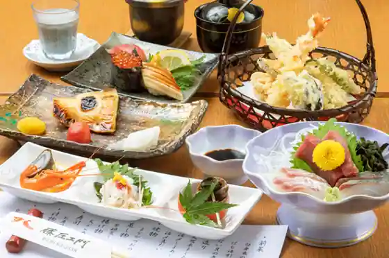
Toza E Mon
らーめん つけ麺 武者麺 根来インター店
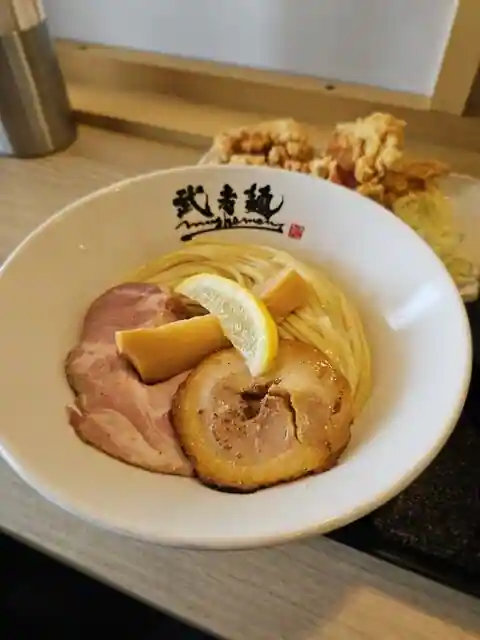
Ramen Tsuke Men Musha Men Negoro Inta
中華菜香房・延
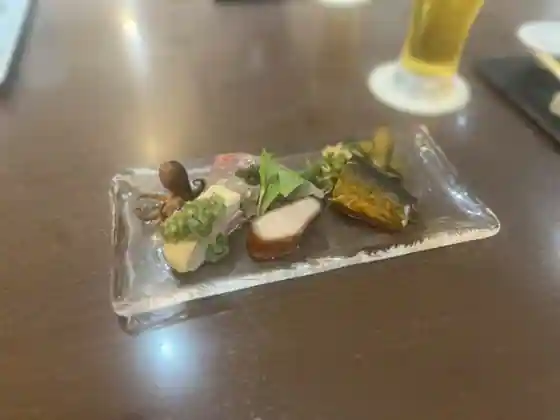
Chuka Na Kobo En
江戸前回転鮨 弥一 岩出店
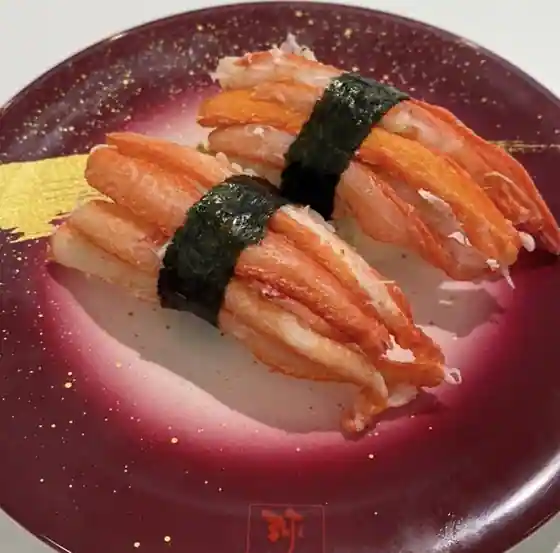
Edo Zenkai Sushi Yaichi Iwade
厚切りとんかつ よし平 岩出中迫店
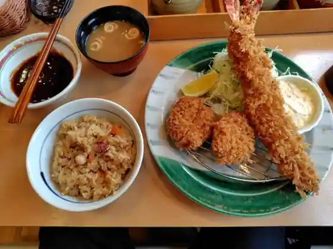
Atsushi Kiri Tonkatsu Yoshi Taira Iwade Nakasako
大漁寿司
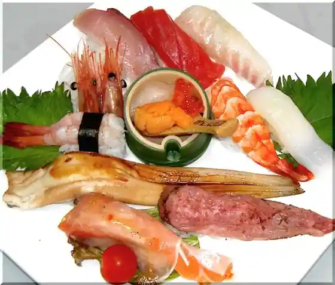
Tairyo Sushi
山田ヒロキチ商店
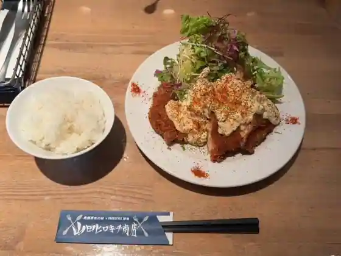
Yamada Hirokichi Sho
満月
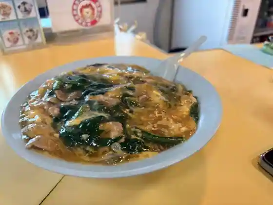
Mangetsu
中華そば よもぎ
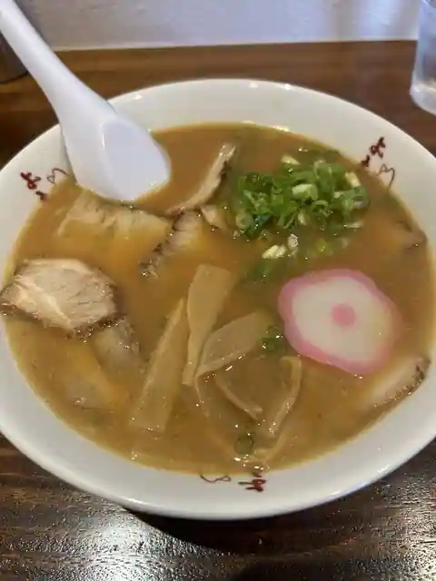
Chuka Soba Yomogi
古民家カフェレストラン 初花
Ko Minka Cafe Restaurant Hatsuhana
カフェ＆レスト 紀和 岩出店
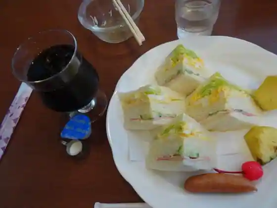
Cafe & Resuto Norikazu Iwade
麺屋たけ井 岩出店
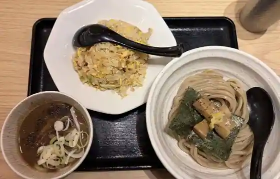
Men Ya Take I Iwade
雷神ラーメン
Raijin Ramen
お好み焼ねごろ
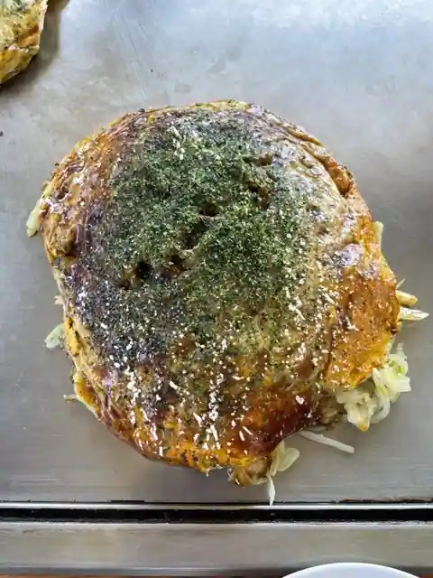
O Konomi Yaki Negoro
チェントロ
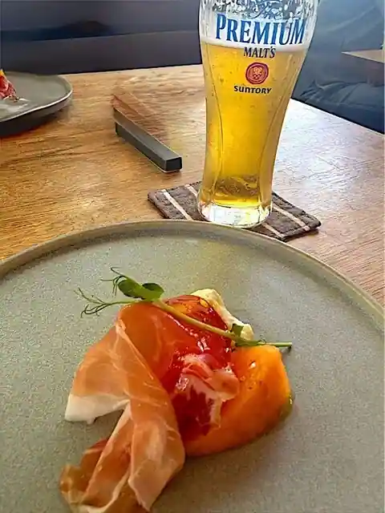
Chentoro
台湾美食 裕福 岩出店
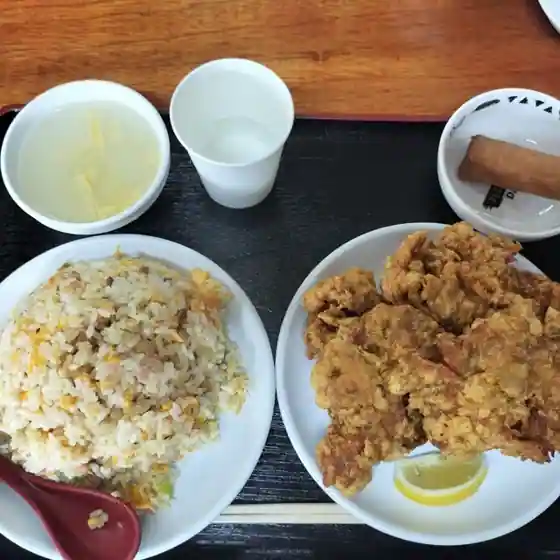
Taiwan Bishoku Yufuku Iwade
ビストロ ムッシュ
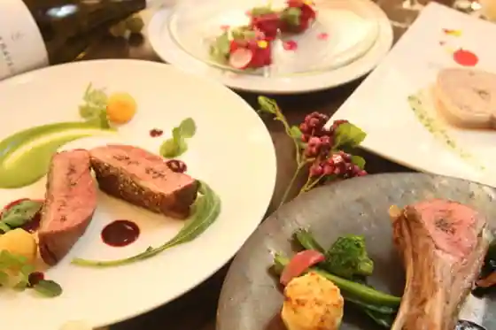
Bistro Musshu
アランチョ
Arancho
Sights
Negoro Tera (Negoro Tera)
Wakayamaken Shokubutsu Koen Midoribana Center
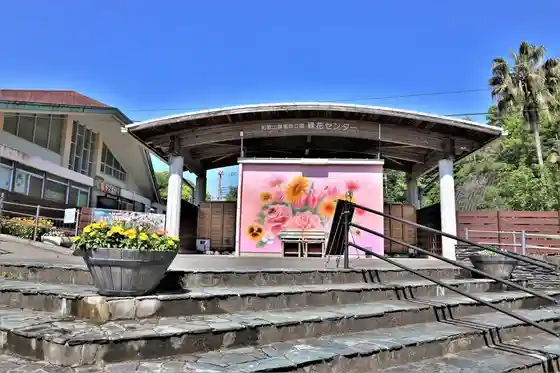
Wakayama Prefectural Forest Park Negoro Yama Genki Forest
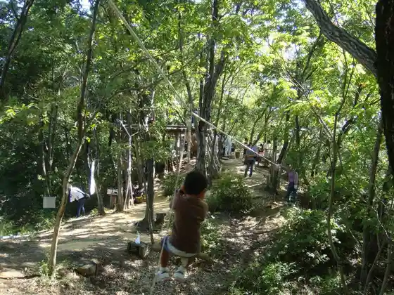
Negoro History Museum
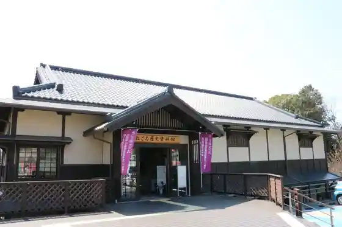